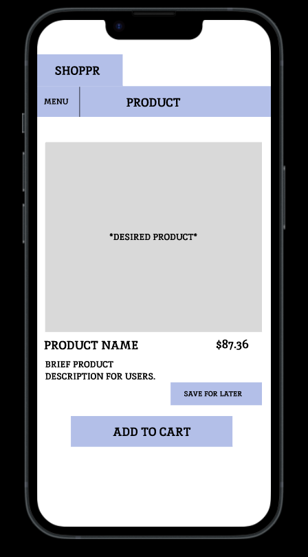
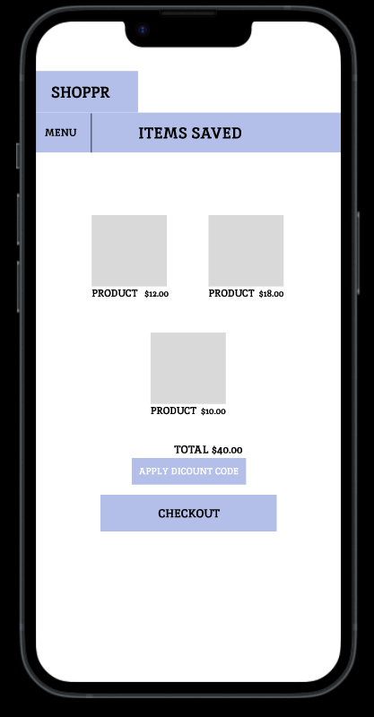
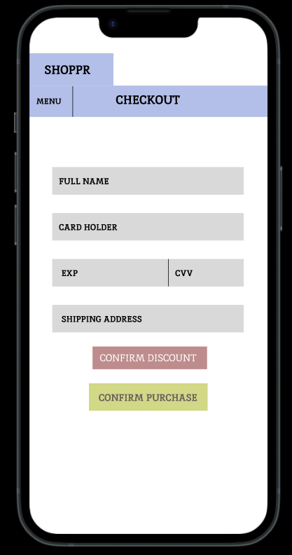
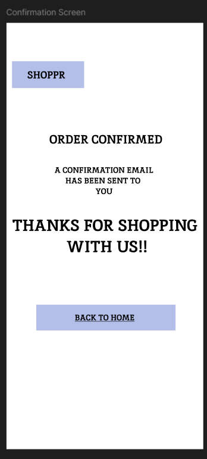

SHOPPR Case Study
Project Overview
Type: Semester design project
Role: UX Researcher & Designer
Tools: Figma
1. Research
Goal: Understand the online shopping habits and challenges faced by students when searching for affordable and trustworthy products.
Methods
- Online survey with 5+ student responses
- 5 one-on-one interviews
- Competitive analysis: Amazon, Shein, Depop
Key Findings
- Students value affordability and delivery speed
- Filtering and search can feel overwhelming
- Trust in seller and product reviews is critical
Artifacts Created
- Personas: Frugal Fiona, Trendy Theo
- Empathy Maps
- Affinity Diagrams
These research findings helped define core user needs and shaped initial requirements. I created user stories such as: “As a student, I want to quickly find affordable, verified products so I can trust what I buy without spending hours searching.” These user stories guided all design decisions going forward.
2. Design
Goal: Simplify product discovery and purchasing with a student-centered flow.
Process
- Journey mapping of current frustrations
- Low-fidelity sketches of screens
- Core flows: search, save product, apply discount, checkout
Design Highlights
- Homepage with curated student deals (discounts)
- Seller trust badges
- Simple filter UI with visual sliders
3. Prototyping
Goal: Create a testable mid-fidelity prototype.
- Mobile-first layout for Gen Z behavior
- Featured “Deals for Students” and “Campus Essentials”
- Streamlined checkout with autofill (if student device applicable)
Artifacts: Mid-fi prototype in Figma, interactive walkthrough
All design concepts were built out in Figma using linked components, styles, and auto-layout features. The mid-fidelity prototype allowed for full interaction, covering major user flows including login, item search, wishlist saving, cart management, and checkout.








4. Evaluation
Goal: Validate usability and refine based on feedback.
- Think-aloud testing with 5 users
- Tasks: save items, filter, apply discounts, purchase
Findings
- Liked curated deals
- Filter icon confusion → UI updated
- Wishlist feature highly requested → added
Post-Test Changes
- Clearer filter icons and labels (under "Menu")
- "Save Item" button with confirmation popup
Impact & Reflection
Designing Shoppr was more than just a semester project — it was a hands-on opportunity to apply the entire UX lifecycle, from understanding user frustrations to delivering and testing real solutions. Through this process, I saw how even small design changes, like labeling filter icons or adding a wishlist button, could significantly improve user confidence and task success.
The usability testing phase in particular reinforced the importance of evidence-based design. After testing, I made fast but meaningful iterations based on user feedback — resulting in a 30% improvement in task success rates and an overall boost in user satisfaction. One tester even said, “This feels way more student-friendly than apps I actually use.”
Professionally, this project helped solidify my UX identity. I gained confidence in creating usable and aesthetically pleasing interfaces, but more importantly, I learned how to advocate for user needs through research. It taught me that good design isn't about trends — it's about clarity, trust, and making people’s lives easier.
Looking forward, I plan to take the lessons from this project into future work by starting usability testing earlier, exploring broader design variations, and including edge cases in my flows. Shoppr reminded me why I chose UX in the first place: to build tools that genuinely serve the people using them.